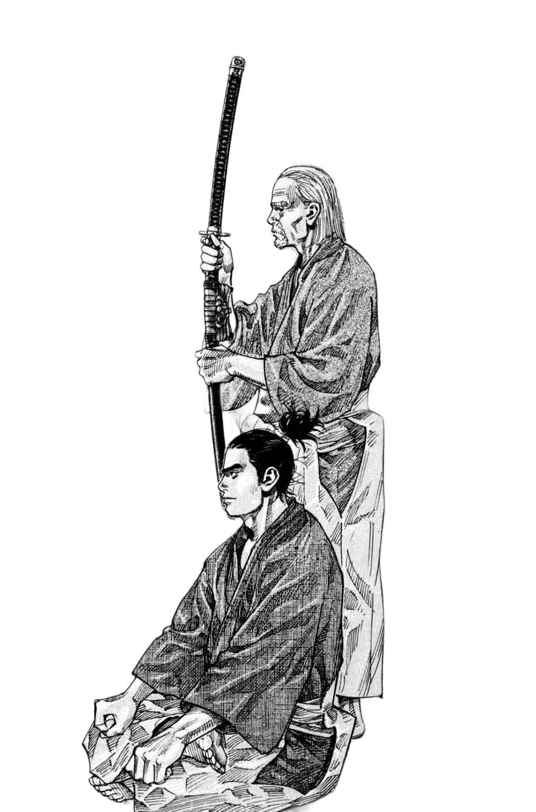

1527 1650 · Yamato Province
"The techniques of this school are unbeatable this arises not from the needless taking of life, but from the true courage required to avoid unnecessary conflict."
ScrollFrom a minor lord defeated in a duel to the official sword instructors of the Tokugawa shōguns the Yagyū story spans four extraordinary generations.
The Yagyū were not always great. Before the mid-sixteenth century they were a minor noble family from Yamato Province small landowners near what is now Nara, fighting for survival in a province constantly contested by larger powers. What transformed them was a single encounter in 1564 that changed the trajectory of the family and, through it, the history of Japanese swordsmanship.
Their school Yagyū Shinkage-ryū did not originate with them. It was given to them by the wandering sword saint Kamiizumi Nobutsuna, who founded Shinkage-ryū and passed it to the Yagyū patriarch after defeating him in a friendly duel. That defeat, and the humility that followed it, became the founding myth of everything the Yagyū would become.
Over four generations the school grew from a rural dojo into the official martial art of Japan's ruling dynasty. The Yagyū taught three Tokugawa shōguns, held senior government posts, influenced the philosophy of Zen swordsmanship, and produced one of history's most enduring samurai mysteries a swordsman who vanished for twelve years and was never fully explained.
Founder of Shinkage-ryū. Not a Yagyū by blood but the origin of everything. Wandered Japan after the fall of his lord and passed his entire school to Munetoshi.
The patriarch. Defeated by Kamiizumi, became his greatest student. Founded Yagyū Shinkage-ryū. Disarmed Tokugawa Ieyasu with bare hands at age 67.
The political master. Sword instructor to three shōguns, minor daimyō, Inspector General of the Tokugawa Shogunate. Author of the Heihō Kadensho.
The legend. Greatest swordsman of the clan. Disappeared for 12 years. Wore an eyepatch (maybe). Died at 43 under circumstances no one agrees on.
The man who was defeated, chose humility, and built an empire of the sword through that single act of surrender.
Yagyū Munetoshi known by his Buddhist name Sekishūsai, meaning "Stone Boat Master" was born in 1527 in Yagyū Village, Yamato Province. His father, Ietoshi, was a minor lord, and the young Munetoshi learned warfare the hard way, fighting his first battle at the age of sixteen against the powerful Tsutsui clan, who attacked Yagyū Castle with ten thousand men. The Yagyū were outnumbered and defeated. For years afterward Munetoshi served whoever held power in the province, slowly building reputation as a swordsman even as his family's political standing remained precarious.
By the 1560s his skill had grown enough that when Kamiizumi Nobutsuna the wandering founder of Shinkage-ryū passed through the Yamato region and posted a challenge, Munetoshi was among those who answered. He was beaten three times, cleanly and completely, by the leather-wrapped bamboo sword that Kamiizumi had invented. Rather than walk away with his ego intact, Munetoshi dropped to his knees and asked to become his student.
Kamiizumi stayed at Yagyū Village for over a year. When he left for Kyoto, he gave Munetoshi a single piece of homework: research and master mutō-dori the technique of facing an armed opponent while unarmed. Munetoshi spent years on this, and when Kamiizumi returned, he demonstrated his understanding so convincingly that Kamiizumi handed him the full transmission of Shinkage-ryū. A minor lord from a backwater village was now heir to one of Japan's greatest sword schools.
Sword master, daimyō, Zen philosopher, intelligence chief the man who made the Yagyū untouchable.
Yagyū Tajima no Kami Munenori is one of the most fascinating figures of the early Edo period a man whose power extended far beyond the sword. Born in 1571 as Munetoshi's fifth son, he was not originally the designated heir to the school. But circumstance the wounding of his eldest brother in battle in 1571 left the path open, and Munenori proved to be the most politically gifted swordsman the Yagyū ever produced.
His career began with Sekigahara in 1600, where he served Tokugawa Ieyasu directly. The exact nature of his role is unrecorded the rewards he received suggest they were considerable and possibly secret in nature. After Ieyasu's victory he was elevated to hatamoto (direct Tokugawa retainer) and formally appointed sword instructor to the shogunal family. He taught Ieyasu's son Hidetada, and then the third shōgun, Iemitsu who had been Munenori's student since childhood and came to trust him deeply.
Under Iemitsu, Munenori rose beyond sword instructor. He was appointed ōmetsuke Inspector General effectively the head of all internal security and intelligence for the Shogunate. This made him, in modern terms, something like a combined Director of National Intelligence and chief of the secret police. The Yagyū swordsmanship school and the Shogunate's surveillance apparatus were, in his hands, intertwined.
The Heihō Kadensho, completed around 1632, is the most important text associated with the Yagyū school. Unlike the Gorin no Sho which is a warrior's personal manual the Kadensho is partly a philosophical treatise, partly a practical sword guide, and partly a meditation on governance. Munenori argued, under the influence of Zen monk Takuan Sōhō, that the qualities required to master the sword empty mind, total awareness, absence of attachment were identical to those required to govern wisely. The sword, in his framework, was not a tool of war but a mirror of the soul.
The school split after Munetoshi's death in 1606 into two branches. Munenori headed the Edo branch, which served the shōgun directly in the capital. His nephew Toshiyoshi headed the Owari branch in Nagoya, serving the Tokugawa cadet branch there. Both survive today the Owari branch particularly intact, with the current headmaster Yagyū Kōichi as the 22nd-generation descendant of Munetoshi.
Munenori personally trained three generations of the Tokugawa dynasty in Yagyū Shinkage-ryū an unprecedented position of trust and access to supreme power.
Starting as a minor hatamoto, Munenori rose to minor daimyō the only sword master in Japanese history to achieve full feudal lord status purely through the sword.
Appointed head of the Shogunate's entire internal security apparatus in modern terms, a fusion of intelligence director and internal affairs chief. The sword school and the surveillance state were one.
The same Zen monk who appears in Yoshikawa's Musashi novel was Munenori's real philosophical guide. Takuan wrote the Fudōchi Shinmyōroku specifically for Munenori it became a foundational text of Zen swordsmanship.
The greatest swordsman of his era. The man who disappeared for twelve years. Japan's most enduring samurai enigma.
Yagyū Jūbei Mitsuyoshi was born in 1607, the eldest son of Munenori. His real given name was Shichirō. He grew up in a household at the apex of power his father instructed the shōgun, his grandfather was a living legend and by his early twenties he had surpassed every other Yagyū swordsman alive. By 1624, at just 17, he was already serving as an attendant in the court of the second Tokugawa Shōgun Hidetada. By his mid-twenties he was regarded as the finest blade the clan had ever produced.
And then he vanished. In 1631, Jūbei now acknowledged as the best swordsman of the Yagyū was dismissed from the shōgun's service. No one recorded why. The official clan chronicles, which contained detailed entries on almost every other family member, have almost nothing on Jūbei for the next twelve years. He simply does not appear in the historical record from 1631 to approximately 1643.
When he reappeared at age 36, he gave a demonstration of swordsmanship before the shōgun, was reinstated to government service, took control of his father's domains when Munenori died in 1646, and then died himself just four years later in 1650, aged 43, under circumstances no one can agree on. He left behind a swordsmanship treatise, two daughters, and an absence so complete it shaped centuries of Japanese fiction.
No historical record explains Jūbei's twelve-year absence. Four major theories have circulated since his death, each with circumstantial support and none with proof.
Warrior's pilgrimage musha shugyō. He left the court to travel Japan challenging swordsmen, as tradition demanded, and the silence was simply the absence of official records for an unofficial journey.
Shogunal spy. Given his father's role as Inspector General, Jūbei was sent on covert intelligence operations the dismissal was cover. His reinstatement with no explanation supports this: people don't ask a spy where he's been.
Personal exile. His father expelled him due to an unknown conflict between them possibly Jūbei struck the Shōgun during training, an act that would embarrass the family politically and require the son's removal.
He simply trained. Some historians argue he remained at a private dojo, devoted to swordsmanship, and the dramatic absence from records reflects how thoroughly unofficial his life was not conspiracy, just solitude.
The most persistent account says Munenori struck Jūbei in the right eye with a real sword during training either deliberately to test him or accidentally during a practice cut. Jūbei fashioned a makeshift patch from a sword guard with leather strapped through it. The image became iconic.
Every portrait made of Jūbei during his lifetime shows him with two functioning eyes. Historian Watatani Kiyoshi concluded that the eyepatch story was invented after his death to dramatise a life that had plenty of genuine mystery already. The legends were written long after the facts ran out.
How Inoue Takehiko used the Yagyū especially Munenori and the school itself as the philosophical dark mirror to Musashi's journey.

By Inoue Takehiko · Yagyū as Institutional Power
In Vagabond, the Yagyū are not simply a sword school they are the embodiment of what Musashi is not. Where Musashi wanders, hungers, bleeds, questions and doubts, the Yagyū are established, powerful, philosophical, and already arrived. Inoue uses them as a structural counterweight to everything the protagonist represents the institution against the individual, the perfected against the still-becoming.
Munenori appears as one of the most complex presences in the manga. Inoue's rendering of him draws heavily on the historical record the Zen philosophy, the political intelligence, the dual role as swordsman and power broker. But Inoue adds psychological texture: Munenori as a man who has integrated the sword so completely into his identity that he cannot easily be read. When Musashi and Munenori's worlds briefly intersect, it is less a duel and more a collision of worldviews the raw against the refined.
Before any Yagyū appears directly, their name moves through the story as a measure of greatness. Other swordsmen reference them. Their school is discussed as the gold standard. Inoue establishes the Yagyū as an institution Musashi is inevitably moving toward not to join, but to test himself against.
Musashi's encounter with Yagyū-trained swordsmen is one of Vagabond's most sustained arcs. Inoue uses the school's practitioners as a gauntlet technically superior, philosophically grounded, and yet something Musashi's raw instinct keeps finding the edge of. The fights are among the manga's most intricate.
Munenori in Vagabond is portrayed as a man who has already completed the journey Musashi is still walking. He is calm, unreadable, politically embedded, and carries none of Musashi's visible torment. Inoue poses an uncomfortable question: is Munenori's serenity genuine mastery or the serenity of a man who traded his soul for power?
Inoue uses the Yagyū's katsujin-ken philosophy "the sword that gives life" as a genuine counterargument to the carnage Musashi leaves behind. In the manga it becomes an ongoing theological debate: is a sword that kills for enlightenment fundamentally different from one that kills for glory? The Yagyū say yes. Musashi isn't sure.
The Yagyū sequences in Vagabond carry a noticeably different visual tone more architectural, more controlled. Where Musashi's chapters sprawl with energy and brushwork chaos, the Yagyū pages are composed, structured. Even the drawing style reflects the contrast Inoue is building between instinct and institution.
By placing the Yagyū as the endpoint of formal swordsmanship politically connected, philosophically complete, technically unassailable Inoue creates a destination Musashi can never simply arrive at. The Yagyū represent the idea that mastery can be institutionalised. Musashi's entire arc is the argument that it cannot.
"The ultimate secret of the sword is to be without the sword. The body becomes the sword, the mind becomes the sword, and the intention becomes the cut before the hand has moved."
Yagyū Shinkage-ryū School Principle, attributed to Munetoshi's transmission
How history, the historical record, and Vagabond each render the three major Yagyū figures differently.
| Yagyū Munetoshi | Yagyū Munenori | Yagyū Jūbei | |
|---|---|---|---|
| Dates | 1527 – 1606 | 1571 – 1646 | 1607 – 1650 |
| Historical Role | Founder of Yagyū Shinkage-ryū. Received the school from Kamiizumi. Demonstrated mutō-dori on Tokugawa Ieyasu. | Sword instructor to three shōguns, daimyō, Inspector General. Author of Heihō Kadensho. The school's political architect. | Greatest swordsman of the clan. Dismissed for unknown reasons. Disappeared 12 years. Died at 43 under disputed circumstances. |
| Primary Achievement | Transformed a minor clan into the custodians of Japan's greatest sword school through humility and mastery. | Made Yagyū Shinkage-ryū the official school of the ruling dynasty while simultaneously running its intelligence apparatus. | Wrote the Tsuki no Shō. Became Japan's most mythologised samurai figure primarily because no one knows what he did. |
| In Vagabond | Referenced as the origin figure the humility of his defeat by Kamiizumi used as philosophical counterpoint to Musashi's ego. | Depicted as the institutionalised master calm, complete, politically embedded. The dark mirror to Musashi's restless searching. | Less prominent in the manga itself, but the school he represents undefeated, philosophically complete is Musashi's implied destination. |
| In Popular Fiction | Appears in historical dramas and novels as the wise patriarch, often played as an elder sage figure. | Appears frequently in Edo-period dramas the spy-master swordsman, the man who knows everything and shows nothing. | The most depicted. Dozens of films, TV series, novels, manga, anime, video games. Usually one-eyed, usually mysterious, always lethal. |
| Legacy | Yagyū Shinkage-ryū survives today the Owari branch under Yagyū Kōichi, 22nd-generation headmaster. The temple and split rock in Yagyū Village still draw visitors. | Heihō Kadensho remains in print. His fusion of Zen philosophy and swordsmanship directly influenced modern kendō ethics and Japanese martial philosophy broadly. | His mystery generated more Japanese fiction than almost any other historical figure. The twelve years are still unresolved. His eyepatch is still debated. He remains unexplained. |
| Central Question | What does it mean to be defeated and emerge greater for it? | Can the sword serve righteousness when it is also the instrument of political power? | What happened to him? Where did he go? Who was he when no one was watching? |